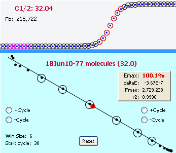

The LRE window encompasses a group of contiguous cycles that are used for LRE analysis of a profile. In the illustration below, the LRE window, depicted as black circles within the LRE plot, is four cycles in size and is derived from the cycles within the central region of the amplification profile, depicted as red circles within the Fc plot:
The LRE window can be expanded or contracted by adding or removing cycles at each end of the window, which can be done manually as is described in Manual Window Selection. In the example shown below, the LRE window has been expanded to 6 cycles by adding a single cycle to both the bottom and top of the window:

This new six cycle window generates a target quantity of 77 molecules, which is similar to the 67 molecules generated by the four cycle window. Nevertheless, based on the expectation that the quantitative precision increases as the LRE window size is increased, a major objective for developing automated window selection was to maximize the size of the LRE window.